《金融数据分析导论--R语言》（2）金融时间序列的线性模型
2016-05-13
金融时间序列的线性模型
2.1平稳性
如果一个时间序列满足：
- 均值是常数
- 方差存在且为常数
- 协方差只与时间间隔有关，与时间无关
则它是弱平稳的。
2.2相关系数和自相关函数
皮尔逊相关系数：

da=read.table("m-ibmsp6709.txt",header=T)
head(da)
ibm=da$ibm
sp5=da$sp
cor(sp5,ibm)
cor(sp5,ibm,method='spearman')
cor(sp5,ibm,method='kendall')
自相关函数：

一个弱平稳时间序列xt是序列自身前后不相关的。
da=read.table("m-dec12910.txt",header=T)
d10=da$dec10 # select the Decile 10 returns
dec10=ts(d10,frequency=12,start=c(1967,1))
par(mfcol=c(2,1))
plot(dec10,xlab='year',ylab='returns')
title(main='(a): Simple returns')
acf(d10,lag=24) # command to obtain sample ACF of the data
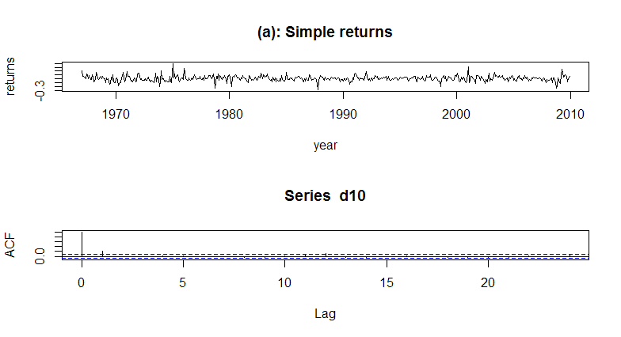
混成检验
一个线性时间序列模型可以完全由其ACF来刻画，我们经常需要联合检验xt的多个自相关系数是否同时为0，Box和Pierce提出了混成统计量，R里用Box.test来实现：
da=read.table("m-ibmsp6709.txt",header=T)
ibm=da$ibm
lnibm=log(ibm+1) # Transfer to log returns
Box.test(ibm,lag=12,type='Ljung')
Box.test(lnibm,lag=12,type='Ljung')
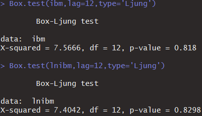
可以看到P值不显著，则接受原假设，即自相关函数为0.
2.3白噪声
- 白噪声：具有有限均值和有限方差的独立同分布的时间序列。
- 高斯白噪声：一个服从均值为0、方差有限的白噪声序列。
2.4简单自回归模型（AR）

2.4.1AR模型的性质
- 均值：

- 方差：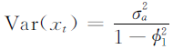
- 平稳的充要条件：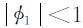
- 自相关系数：呈现漂亮的指数衰减。
2.4.2实践中AR模型的识别
AR(p)序列的的样本偏自相关函数是p步截尾的。
2.5简单移动平均模型（MA）
MA(1)模型的一般形式为：
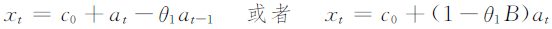
2.5.1MA模型的性质
- MA模型的常数项就是序列的的均值
- MA(q)模型的方差为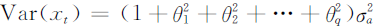
- 自相关函数（ACF）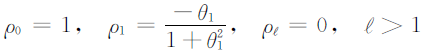
- MA(q)序列只与其前q个滞后值线性相关，是一个“有限记忆”模型。
2.5.2MA模型定阶
简单的说，MA(q)模型的ACF是q阶截尾的。
2.6简单ARMA模型
ARMA(1,1)模型的形式：

2.6.1ARMA(1,1)模型的性质
- 均值：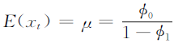
- 方差：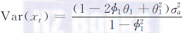
- ACF和PACF都不能在任意有限间隔后截尾
- ACF与AR(1)模型很相似，只是指数衰减从间隔2开始。
- PACF与MA(1)模型很相似，只是指数衰减从间隔2开始。
2.6.2ARMA模型的识别
ACF和PACF都无法提供足够的信息来识别ARMA模型，这时可以用到推广的自相关函数（EACF）。
2.7单位根非平稳型
利率、汇率、资产的价格序列往往都是非平稳的，这样的非平稳序列叫做单位根非平稳时间序列（unit-root nonstationary time series）。
2.7.1随机游走
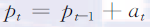
它可以被看作一个特殊的AR(1)模型，那么pt-1的系数是1，这不满足AR(1)的平稳性条件。从而随机游走不是弱平稳的。
2.7.2带漂移的随机游走
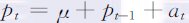
常数项表示价格的时间趋势，通常称为模型的漂移（drift）。
常数项的解释：
- 对于MA(q)模型，常数项就是序列的均值；
- 对于AR(p)和ARMA(p,q)模型，常数项与均值有关；
- 对带漂移的随机游走，常数项变为序列的时间斜率。
2.7.3单位根检验
原假设：有单位根pt-1的系数为1； 备择假设：其系数小于1.
利用如下两个模型：
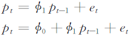
DF统计量为：
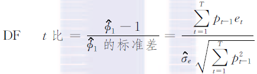
由于经常使用的是AR(p)模型，所以需要用到扩展DF单位根(Augmented Dickey-Fuller, ADF)检验。
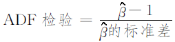
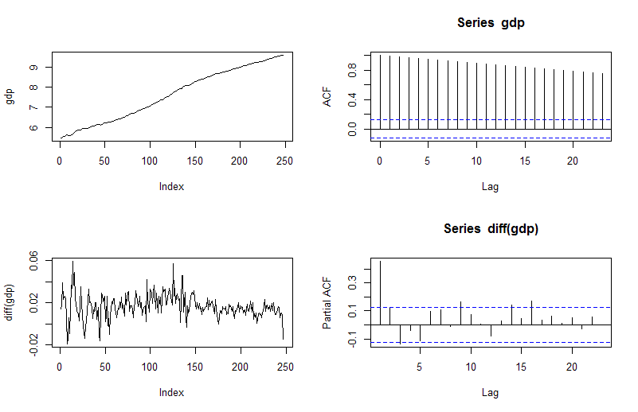
library(fUnitRoots)
da=read.table("q-gdp4708.txt",header=T)
gdp=log(da[,4])
m1=ar(diff(gdp),method='mle')
adfTest(gdp,lags=10,type=c("c"))
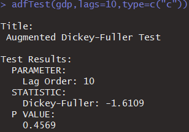
p值可以看出接受原假设，即存在单位根。